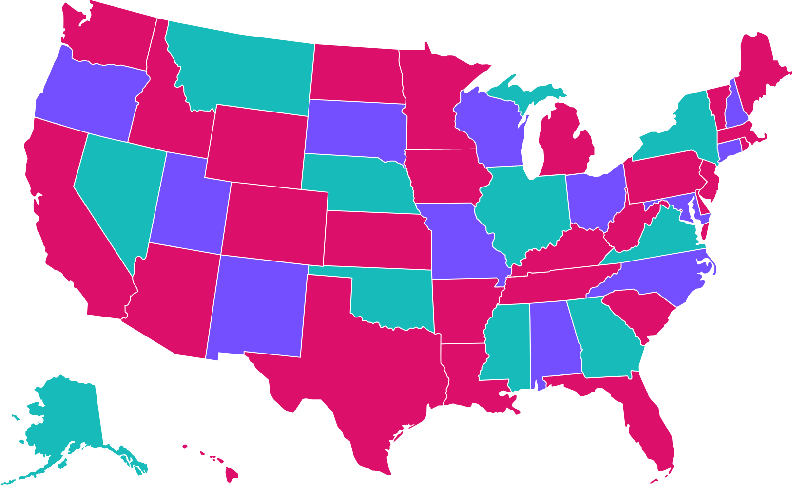
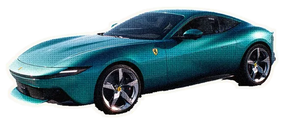

¿Por qué
Coco?
Con sede en Miami · Chicago
Somos más que un nombre “cuchi”.
cu·chi
Lindo, tierno, adorable. Como en: “¡Qué cuchi!”
Somos un estudio pequeño con un equipo que, por más de una década, ha creado campañas, tráileres, cortos y contenido detrás de cámaras que conectan historias con audiencias hispanas y latinas en todo el mundo. También hemos ayudado al mundo a descubrir producciones de Latinoamérica y del mercado hispano de EE. UU.
Lo hacemos a nuestra manera: con creatividad, con ojo visual y con emoción. Entendemos que nuestra audiencia no es un solo grupo; abarca países, generaciones, costumbres y experiencias.
Por eso es clave vivir la cultura desde adentro. Súmale años de experiencia en la industria y el ritmo vertiginoso de este negocio, sin perder el hilo ni el sentido del humor.
Construimos relaciones, no solo proyectos. Muchos de nuestros clientes se han convertido en aliados de largo plazo.
Más de 20 premios internacionales. Campañas premiadas. Cero drama. Y sí, un nombre “cuchi”.
- Cualquier producción, cualquier cultura→ Audiencias hispanas + latinas
- Producciones hispanas + latinas→ El mundo
- Producciones hispanas + latinas→ Audiencias hispanas + latinas
Lo que nos
hace diferentes
Cultura desde adentro
Hablamos el idioma, literal y culturalmente. Del matiz al ritmo, sabemos cómo hacer que el contenido conecte de forma auténtica en los distintos mercados hispanos de EE. UU. y de Latinoamérica, sin clichés ni estereotipos.
Solidez operativa
Acabado de nivel de cadena, manejo seguro de materiales y especificaciones de entrega cumplidas a la primera. Grandes lanzamientos, plazos ajustados, cero sorpresas.
Liderazgo + ejecución de confianza
Nuestro liderazgo suma más de 25 años de experiencia en entretenimiento, incluido tiempo dentro de grandes cadenas y empresas de medios. Esa mirada desde la cadena define cómo pensamos, creamos y ejecutamos.
Trabajo premiado
Más de 20 premios de la industria, entre ellos el Grand Prix y el Oro en el Hamburg World Media Festival, un Global Entertainment Award, un Telly y oros de Promax BDA en Latinoamérica, EE. UU. y el mundo.
Nuestras
sedes
Miami es el centro creativo y comercial de los medios hispanos en EE. UU. Chicago alberga una de las comunidades latinas más grandes e influyentes del país. Juntas, nos dan acceso directo a las tendencias culturales, las relaciones en la industria y el conocimiento del público que más les importan a las marcas de entretenimiento que buscan llegar a la audiencia hispana.
Y eso sin contar el acceso ilimitado a coladas y hot dogs.

Clientes que confían en nosotros
Trabajar con Coco es como subirse a un Ferrari con control de crucero. Ya estoy esperando el próximo viaje.

Esto no habría sido posible sin Coco. Es un lujo trabajar con gente como ustedes.
No puedo enfatizar lo suficiente el buen gusto y la confianza con que trabajamos durante esas semanas intensas. No dudaría ni un segundo en volver a hacerlo con Coco Media.
Conoce a la fundadora
Mary Cruz
Camacho
Fundadora · Directora creativa · Productora ejecutiva
Mary Cruz Camacho fue ejecutiva de entretenimiento durante más de una década: lideró equipos creativos, produjo contenido original y creó campañas premiadas para audiencias hispanas y latinoamericanas antes de fundar Coco Media. Como ha trabajado tanto del lado de la cadena como del lado creativo y de producción, sabe lo que de verdad implica convertir una idea en un lanzamiento: la estrategia, la política interna, los plazos y todo lo que pasa en el medio.
Creció en España, hizo su carrera en Venezuela y ha producido en Colombia, México, Argentina, EE. UU. y más allá. Hoy reparte su tiempo entre Miami y Chicago. Ha vivido en carne propia las diferencias de idioma y cultura, y sabe que un chiste que funciona en Caracas no siempre funciona en Ciudad de México (y vaya que tenemos historias sobre eso).
Trata cada proyecto como si fuera propio y no lo suelta hasta que el trabajo se siente fiel a la historia y a la audiencia. Lidera con integridad y le pide lo mismo a su equipo: un grupo elegido a mano de estrategas, guionistas, editores y productores bilingües que conocen esta industria desde adentro y cuidan cada detalle tanto como ella.
El resultado es un estudio que aporta experiencia de nivel ejecutivo, verdadera fluidez cultural y mucho corazón a cada proyecto.
¿Buscas un socio creativo?
Uno que entiende la cultura, conoce la industria y pierde el sueño por el trabajo igual que tú. Es lo que dejan más de 25 años en marketing de entretenimiento.